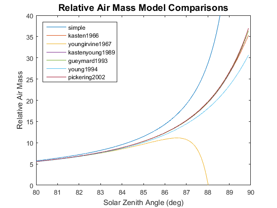

pvl_relativeairmass
Gives the relative (not pressure-corrected) airmass.
Contents
Syntax
AM = pvl_relativeairmass(z)
AM = pvl_relativeairmass(z, model)
Description
Gives the airmass at sea-level when given a sun zenith angle z (in degrees) using a user-specified model.
Inputs
- z - Zenith angle of the sun. Note that some models use the apparent (refraction corrected) zenith angle, and some models use the true (not refraction-corrected) zenith angle. See model descriptions below for which type of zenith angle is required.
- model - String variable indicating the airmass model to be used. Available models are listed below. If model is not included or is not valid, the default model is 'kastenyoung1989'.
Available Air Mass Models
- 'simple' - secant of apparent zenith angle.
- 'kasten1966' - See reference [1] - requires apparent sun zenith.
- 'youngirvine1967' - See reference [2] - requires true sun zenith.
- 'kastenyoung1989' - See reference [3] - Default model; requires apparent sun zenith.
- 'gueymard1993' - See reference [4] - requires apparent sun zenith.
- 'young1994' - See reference [5] - requires true sun zenith.
- 'pickering2002' - See reference [6] - requires apparent sun zenith.
Outputs
- AM - Relative airmass at sea level. Contains NaN values for all zenith angles greater than 90 degrees.
Example 1
Use default model near AM 1.5
AM = pvl_relativeairmass(45)
AM =
1.4126
Example 2
Compare models at low sun angles
AM = zeros(100,7);
z = zeros(100,1);
z = z+ (80:0.1:89.9)';
models = {'simple' 'kasten1966' 'youngirvine1967' 'kastenyoung1989' 'gueymard1993' ...
'young1994' 'pickering2002'};
for i=1:7
AM(:,i) = pvl_relativeairmass(z,models{i});
end
figure
plot(z,AM(:,1))
hold all
for i=2:7
plot(z,AM(:,i))
end
ylim([0 40])
legend(models,'Location','NW')
xlabel('Solar Zenith Angle (deg)')
ylabel('Relative Air Mass')
title('Relative Air Mass Model Comparisons','FontSize',14)
 References
[1] Kasten, F., 1965. A New Table and Approximation Formula for the Relative Optical Air Mass, Theo. and Appl. Climatology vol. 14(2), pp. 206-223.
[2] A. T. Young and W. M. Irvine, 1967. Multicolor Photoelectric Photometry of the Brighter Planets, The Astronomical Journal, vol. 72, pp. 945-950.
[3] Kasten, F., Young, A., 1989. Revised optical air mass tables and approximation formula, Applied Optics vol. 28(22), pp. 4735–4738.
[4] Gueymard, C., 1993. Critical analysis and performance assessment of clear sky solar irradiance models using theoretical and measured data, Solar Energy, vol. 51, pp. 121-138.
[5] Young, A. T., 1994. AIR-MASS AND REFRACTION, Applied Optics, vol. 33, pp. 1108-1110.
[6] Pickering, K. A., 2002. The Ancient Star Catalog. DIO, vol. 12.
See Also
pvl_absoluteairmass, pvl_ephemeris
Copyright 2014 Sandia National Laboratories